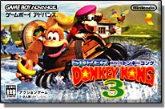
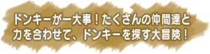
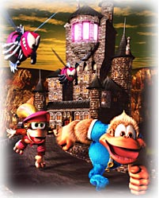

|
|  |
| 発売日：2005年12月1日 |
|
| 希望小売価格：3,800円 |
|
| ジャンル：アクションゲーム |
|
| プレイ人数：１〜２人 |
|
| オフィシャルページへ |
|
|  |
|
|
|
|
いつも元気で楽しそうなあの人は、王道のアクションゲームが好きなのでは？
アクションゲームは年齢に関係なく遊べますが、『ドンキーコング』タイトルだったらファミコン世代であるオトナなあの人にいかが？
長く愛され続けるドンキーコングシリーズなら、往年のゲームファンも納得のプレゼントになるはず。
DKアイランドでのんびり生活していたある日、ドンキーとディディーが行方不明になってしましました。
捜しに行こう！ と出かける今回の主人公は、ディクシーコングと、まだ赤ちゃんのディンキーコング。
ディクシーコングとディンキーコングはそれぞれアクションに違いがあり、上手く使い分けたり協力プレイで攻略したいところ。
多彩なアクション展開ですが、ボタン操作はカンタン。少しだけ練習すればスムーズにプレイできます。
全９ワールド、55ステージとボリュームたっぷりな内容で、目の肥えた人にも納得の遊びが満載。
仲間として助けてくれるキャラクター「アニマルフレンズ」をフル活用してステージを進みましょう。
ゲームボーイミクロと一緒に靴下のなかへセットしてプレゼント…なんて、子供の頃にファミコンで遊んだ気持ちを思い出しそうじゃない？
さらにファミコンカラーのゲームボーイミクロにして、懐かしい気分を盛り上げたら喜び倍増。
アクションのコツを教えてもらえば、さらに仲良くなれちゃう。楽しい話題作りにぜひ。 |
|
|
|
|
|